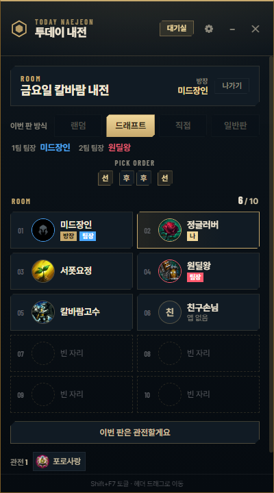
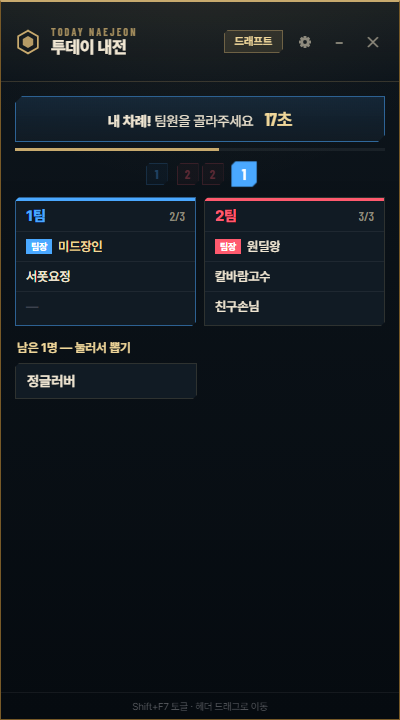

오늘 모인 사람끼리,
롤 내전 한 판.
방을 만들고 팀만 나누면 나머지는 앱이 해요. 결과 기록, MVP 투표, 오늘 순위, 그리고 판이 끝나면 그 판 최고의 장면까지.
실제 내전 장면 · 자야 트리플킬, 앱이 리플레이로 찍고 편집한 그대로소리는 스피커 버튼으로
내전 하룻밤은
이렇게 흘러가요
시각은 예시예요. 누가 결과를 적거나 순위를 계산할 필요가 없어요.
- 20:31
방을 만들어요
롤에 로그인한 계정으로 자동으로 들어가요. 한 명이 방을 만들면 그 사람이 방장, 나머지는 목록에서 들어오면 돼요.
- 20:34
팀을 나눠요
랜덤, 드래프트, 직접 배치 중에 골라요. 드래프트면 사미라가 동전을 던져 선픽을 정하고, 팀장이 30초씩 번갈아 뽑아요.
- 20:36
평소처럼 게임해요
앱이 롤 대기방에서 각자 자기 팀 자리로 옮겨 줘요. 게임 중엔 앱이 화면을 가리지 않아요.
- 20:58
결과가 저절로 남아요
승패, 챔피언, KDA, 딜량, 증강까지. 정산 화면을 바로 넘겨도 전적에서 다시 찾아와요.
- 20:59
최고의 장면을 같이 봐요
방장 PC가 리플레이에서 결정적인 장면을 찾아 영상으로 만들어요. 그동안 누가 팟지일지 다 같이 맞혀 봐요.
- 21:01
MVP를 뽑아요
진 팀이 이긴 팀의 MVP를, 이긴 팀이 진 팀의 SVP를, 모두가 매너왕을 뽑아요.
- 23:40
오늘 순위가 나와요
그날 판을 모아 전적, 승률, MVP 횟수, KDA로 순위를 매겨요. 하루는 새벽 6시에 넘어가서, 자정을 넘겨도 같은 날이에요.
롤 클라이언트 옆에
붙는 작은 창
클라이언트 양옆에 붙어 따라다니고, Shift+F7로 숨겨요. 실제 화면 그대로예요.





옆으로 넘겨 보세요 →
들어 있는 것
- 방
- 여러 모임이 동시에 써도 섞이지 않아요. 방장이 나가면 남은 사람이 이어받고, 모두 나가면 방은 사라져요.
- 팀 나누기
- 랜덤, 드래프트(팀장 픽·30초·자동 픽), 직접 배치(지난 판 팀 그대로 한 번에). 쉬고 싶으면 관전.
- 결과 기록
- 롤 정산에서 자동으로. 놓쳐도 전적에서 다시 찾아와요. 같이 한 일반 게임(칼바람 등)도 따로 남아요.
- 최고의 장면
- 킬 장면은 팟지, 서포터·탱커의 활약은 숨은 영웅. 영상은 3일 보관, 원하면 내 PC에 저장.
- 투표와 순위
- MVP·SVP·매너왕, 오늘 순위, 사람별 프로필(전적, 많이 한 챔피언, 찰떡 팀원과 천적).
- 전적 점수
- 프로필에 솔로 랭크 티어와 최근 전적으로 매긴 칼바람·아수라장 등급.
- 증강 가이드
- 챔피언 선택 때 그 챔피언의 추천 증강과 조합(aramgg.com 통계). 게임 중엔 뜬 증강 셋의 순위를 카드 위에 표시(설정에서 켠 사람만).
설치는
1분이면 끝나요
- 운영체제
- Windows 10 · 11
- 필요한 것
- 리그 오브 레전드 클라이언트
- 단축키
- Shift+F7 창 숨기기
- 설치 파일 받기위의 다운로드 버튼으로
today-naejeon-setup.exe를 받아요. - 파란 경고창에서 「추가 정보」 → 「실행」개인이 만든 무료 앱이라 서명이 없어서 뜨는 정상 경고예요.
- 롤에 로그인그 계정으로 자동으로 들어가요. 가입이나 아이디 고르기는 없어요.
- 끝업데이트는 앱을 켤 때 알아서 돼요.
Microsoft Defender SmartScreen에서 인식할 수 없는 앱의 시작을 차단했습니다. 이 앱을 실행하면 PC가 위험에 노출될 수 있습니다.
추가 정보노란 테두리 순서대로. 「실행」은 「추가 정보」를 누르면 나타나요.
자주 묻는
질문
돈이 드나요?
아니요. 무료이고 광고도 없어요.
다 같이 설치해야 하나요?
같이 하는 사람 모두 설치하는 게 좋아요. 설치 안 한 친구는 방장이 손님으로 팀에 넣을 수 있지만, 투표와 자동 기록은 설치한 사람만 돼요.
계정 비밀번호를 가져가나요?
아니요. 앱은 PC에서 켜져 있는 롤 클라이언트에게 지금 로그인한 닉네임과 경기 결과, 전적만 물어봐요. 비밀번호는 알 수도 없고 저장하지도 않아요.
게임이나 계정에 문제가 생기지 않나요?
게임 안의 정보를 바꾸거나 플레이를 대신하지 않아요. 롤 클라이언트가 주는 대기방·경기 결과 정보를 읽고, 최고의 장면을 찍을 때만 방장 PC에서 리플레이를 열어요.
예전 내전 사이트 시즌 기록과 같이 쌓이나요?
아니요. 투데이 내전은 하루 단위로 따로 쌓이는 별개의 앱이에요. 기존 내전 오버레이와 한 PC에 같이 설치해도 돼요.
「지금은 자리가 꽉 찼어요」가 떠요.
무료 서버라 한 번에 쓸 수 있는 인원이 정해져 있어요. 켜 둔 채 기다리면 자리가 나는 대로 자동으로 들어가요.
Mac에서도 되나요?
지금은 Windows만 돼요.